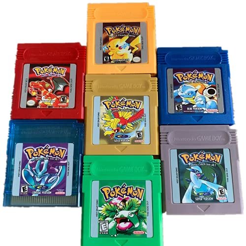

La storia dei Pokèmon cominciava proprio nel 1996 con il gioco pubblicato da Nintendo che fece divertire un po’ tutti. Si trattava di far combattere, catturare e allenare i Pokèmon sulla piccola console Game Boy. Fu un successo. Dopo un inizio così positivo il mondo dei Pokèmon si sviluppò maggiormente con altri videogiochi, film, carte, libri, gadget e non solo. Basta pensare ai tanti giocattoli che in tutta la vita dei Pokèmon, dalla loro nascita fino ad oggi, sono stati ideati e venduti. Una miriade di magliette e portachiavi con il faccino sorridente di Pikachu, il Pokèmon più famoso. E ancora oggi il gioco dei Pokèmon è uno fra i videogiochi più amati in tutto il mondo con i suoi 720 Pokèmon, tra cui se ne contano di nuovi, evoluti, trasformati e così via.
La storia dei Pokèmon vede i suoi numerosi videogiochi spopolare ovunque nell’arco di 20 anni. Un fenomeno, quello dei Pokèmon, che si protrae nel tempo senza mai stancare. Dai primi videogiochi intitolati Pokèmon Verde, Pokèmon Rosso, Pokèmon Blu, nasce poi Pokèmon Giallo, dove poter incontrare Bulbasaur, Squirtle, Charmander ed infine Pikachu. Seguirono Pokèmon Oro e Argento, Rubino, Zaffiro e tanti altri, superando tranquillamente i trenta titoli. All’interno del gioco dei Pokèmon c’è un ricercatore di Pokèmon che inventò il Pokèdex dove memorizzare i Pokèmon catturati o incontrati e dove è possibile avere tutte le informazioni possibili sui Pokèmon. Inoltre ogni versione del gioco avrà i suoi differenti Pokèmon, quindi per scambiarli basta avere due console Nintendo e una connessione. I Pokèmon mancanti completeranno il Pokèdex.
Dal Game Boy al DS la storia dei Pokèmon ci coinvolge ancora. I Pokèmon vengono divisi dalla Pokèmon Company in tante generazioni con nuovi Pokèmon e nuove caratteristiche. Vengono inoltre anticipati nei film, nelle carte e nei manga. Per esempio, le Abilità Pokèmon derivano dai Poteri Pokèmon che erano presenti nel gioco di carte collezionabili. Ma se volessimo chiederci perché i Pokèmon hanno spopolato, la risposta è naturalmente molto semplice. La simpatia, lo spirito combattivo, il senso di amicizia e tenerezza rendono i Pokèmon un gioco da non perdere. Avvincente e grazioso il gioco dove collezionare insetti o piccoli mostri tascabili è solo Pokèmon.